Exploring DeepFloyd IF for Image Generation & Manipulation
CS180: Intro to Computer Vision and Computational Photography | UC Berkeley | Fall 2025
Part 0: Setup & Initial Sampling
🎯 Overview
This project explores the DeepFloyd IF diffusion model, a powerful two-stage text-to-image generator. Stage 1 produces 64×64 images, which Stage 2 upsamples to 256×256.
Random Seed: 472467180
Initial Prompt Exploration
I experimented with various artistic styles and subjects to understand the model's capabilities:
Comparing Inference Steps
Testing the same prompt with different num_inference_steps values reveals the quality vs. speed tradeoff:
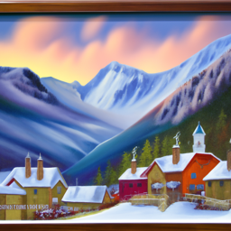
"an oil painting of a snowy mountain village"
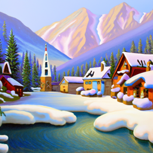
"an oil painting of a snowy mountain village"
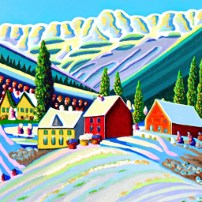
"an oil painting of a snowy mountain village"
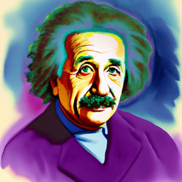
"a watercolor of albert einstein"
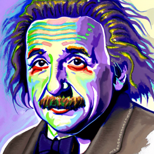
"a watercolor of albert einstein"
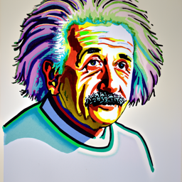
"a watercolor of albert einstein"
Observation: More inference steps (50) produce sharper details and better coherence, but 20 steps offers a good balance between quality and computation time. The 10-step version shows noticeable artifacts and less refined details.
Additional Generated Images
"a photo of the amalfi coast"
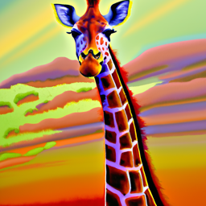
"an oil painting of a giraffe"
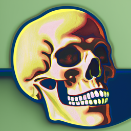
"a lithograph of a skull"
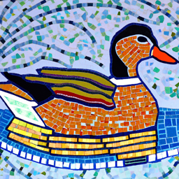
"a mosaic of a duck"
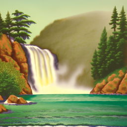
"a lithograph of waterfalls"
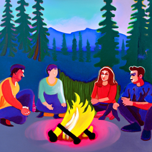
"an oil painting of people around a campfire"
Part 1.1: Implementing the Forward Process
📐 Mathematical Foundation
The forward diffusion process gradually adds Gaussian noise to a clean image. Given a clean image x₀, we can obtain a noisy version at any timestep t:
Where ᾱ_t (alpha_bar_t) controls the noise schedule. For DeepFloyd, T = 1000 timesteps.
Campanile at Different Noise Levels
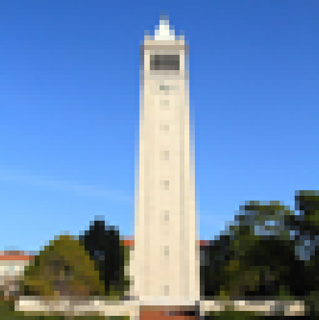
Original
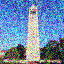
t = 250 (Light noise)
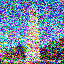
t = 500 (Moderate noise)
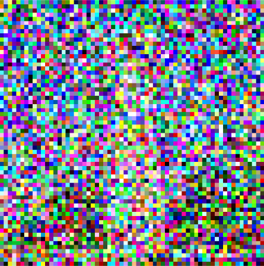
t = 750 (Heavy noise)
Key Insight: As t increases, more noise is added. At t=750, the image is almost pure noise, while at t=250, the structure is still visible. This demonstrates how ᾱ_t decreases from 1 (clean) to 0 (pure noise).
Part 1.2: Classical Denoising
Can traditional image processing techniques like Gaussian blur remove diffusion noise? Let's find out!
Gaussian Blur Attempts
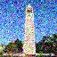
Timestep t=250
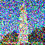
Timestep t=500
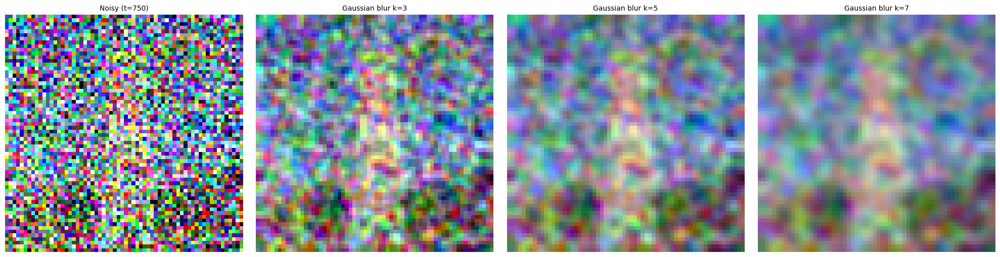
Noisy (t=750)
Result: Classical Gaussian blur fails to effectively denoise diffusion noise. While it smooths the image, it cannot recover the underlying structure and loses important details. This motivates the need for learned denoising approaches!
Part 1.3: One-Step Denoising with UNet
🧠 Learned Denoising
Instead of classical filters, we use a pretrained UNet that predicts the noise ε added to the image. We can then recover the clean image:
The UNet is conditioned on both the timestep t and a text prompt embedding.
One-Step Denoising Results
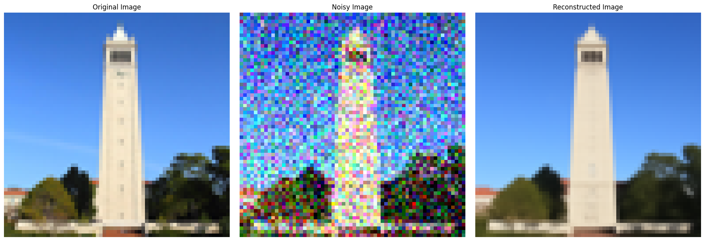
Timestep t=250
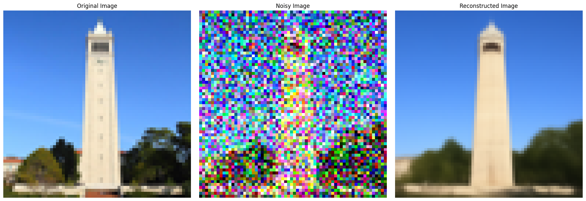
Timestep t=500
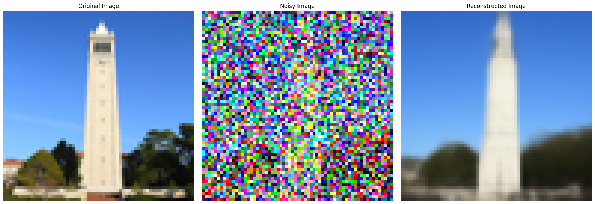
Timestep t=750
Observation: The UNet successfully removes noise even in one step, vastly outperforming Gaussian blur! However, quality degrades at higher noise levels (t=500, 750) where one step isn't sufficient.
Part 1.4: Iterative Denoising (DDPM)
🔄 The Reverse Process
Rather than denoising in one large step, DDPM (Denoising Diffusion Probabilistic Models) iteratively removes noise in small steps. At each step from t to t':
Key Finding: Iterative denoising produces significantly better results than one-step approaches, especially for high noise levels. The gradual refinement allows the model to progressively recover fine details.
Part 1.5: Diffusion Model Sampling
✨ Generating from Pure Noise
By setting i_start=0 and starting with pure random noise, we can generate completely new images from scratch! This demonstrates the true generative power of diffusion models.
Generated Images (Prompt: "a high quality photo")
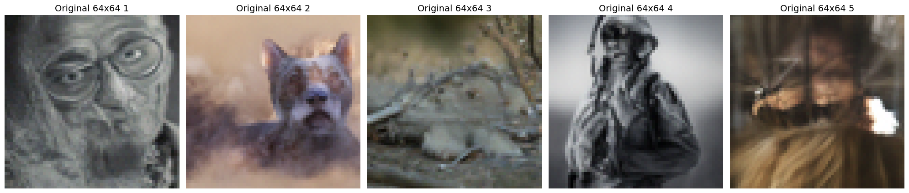
Samples 1, 2, 3, 4, 5 (64×64)
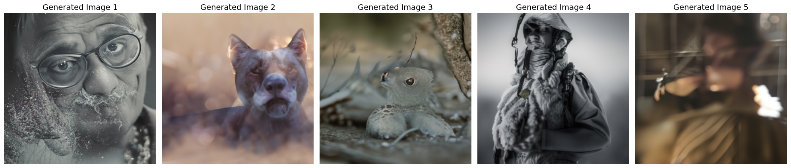
Samples 1, 2, 3, 4, 5 (256×256)
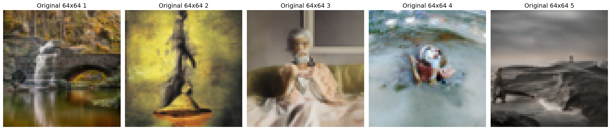
Samples 1, 2, 3, 4, 5 (64×64)
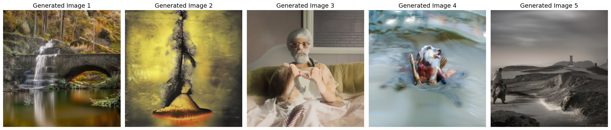
Samples 1, 2, 3, 4, 5 (256×256)
Samples 1, 2, 3, 4, 5 (64×64)
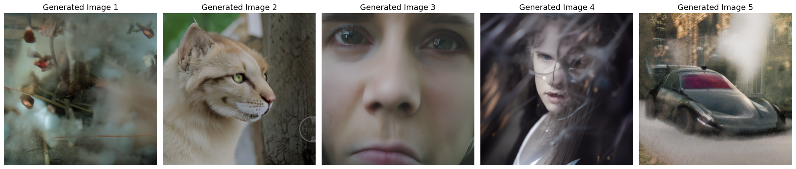
Samples 1, 2, 3, 4, 5 (256×256)
Observation: While the images are coherent, they lack detail and specificity. The generic prompt results in somewhat bland outputs. This motivates the need for Classifier-Free Guidance in the next section!
Part 1.6: Classifier-Free Guidance (CFG)
🎯 Improving Generation Quality
Classifier-Free Guidance dramatically improves image quality by amplifying the influence of the text prompt. The key idea is to compute both conditional and unconditional noise estimates, then combine them:
When γ > 1, we move further in the direction of the conditional prompt, producing higher quality but less diverse images.
CFG-Enhanced Generation (γ = 7)
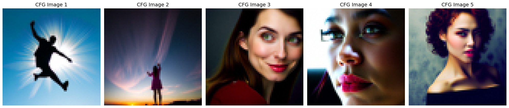
Samples 1, 2, 3, 4, 5 (64×64)
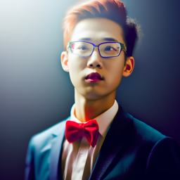
Sample 1 (256×256)
Sample 2 (256×256)
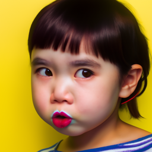
Sample 3 (256×256)
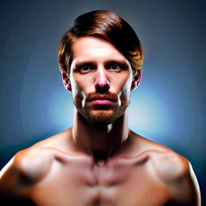
Sample 4 (256×256)
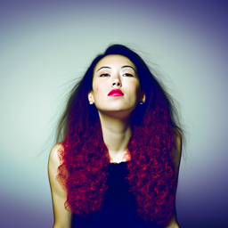
Sample 5 (256×256)
Result: With CFG, the generated images are significantly sharper, more detailed, and better aligned with the prompt. The quality improvement is dramatic! All subsequent experiments use CFG with γ=7.
Part 1.7: Image-to-Image Translation (SDEdit)
🔄 The SDEdit Algorithm
We can edit real images by adding noise then denoising with CFG. The amount of noise (controlled by i_start) determines the strength of the edit:
Low i_start (1-3): Heavy editing, creative interpretation
Medium i_start (5-10): Balanced edits, recognizable structure
High i_start (20): Subtle changes, mostly preserves original
This projects images back onto the "natural image manifold" while allowing controlled variation.
Campanile Edits at Different Noise Levels
Original Campanile:
64x64
256x256
Edited Versions
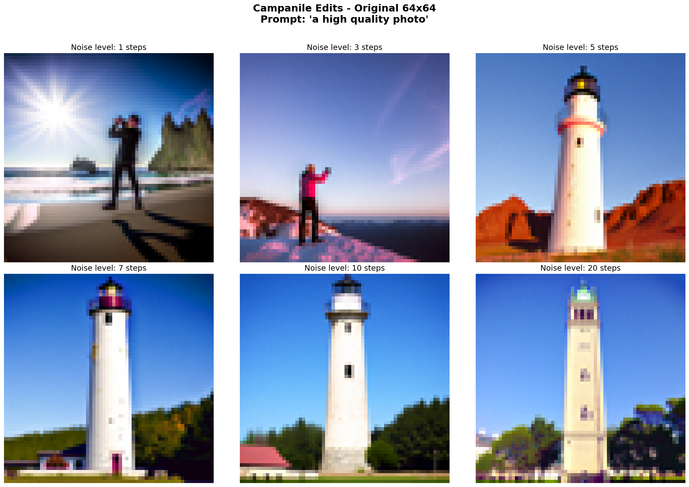
64x64
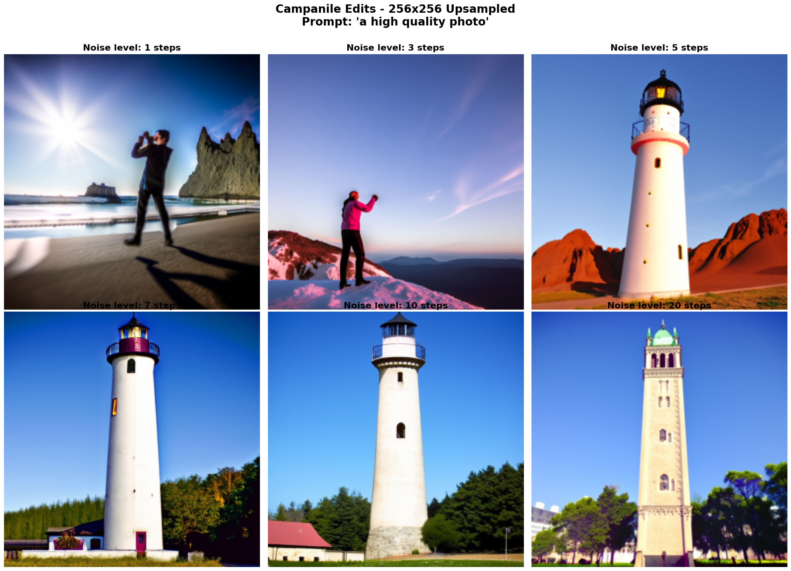
256x256
Custom Image Edits
I applied the same technique to two additional images:
Kurumi Tokisaki:
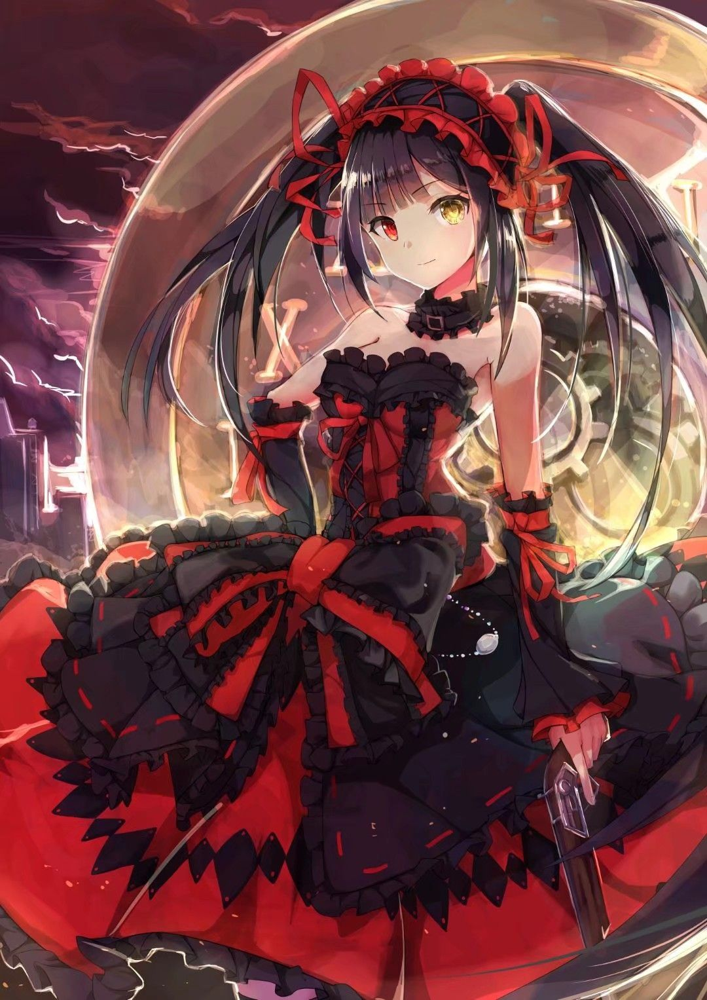
Original Custom Image 1
Custom Image 1
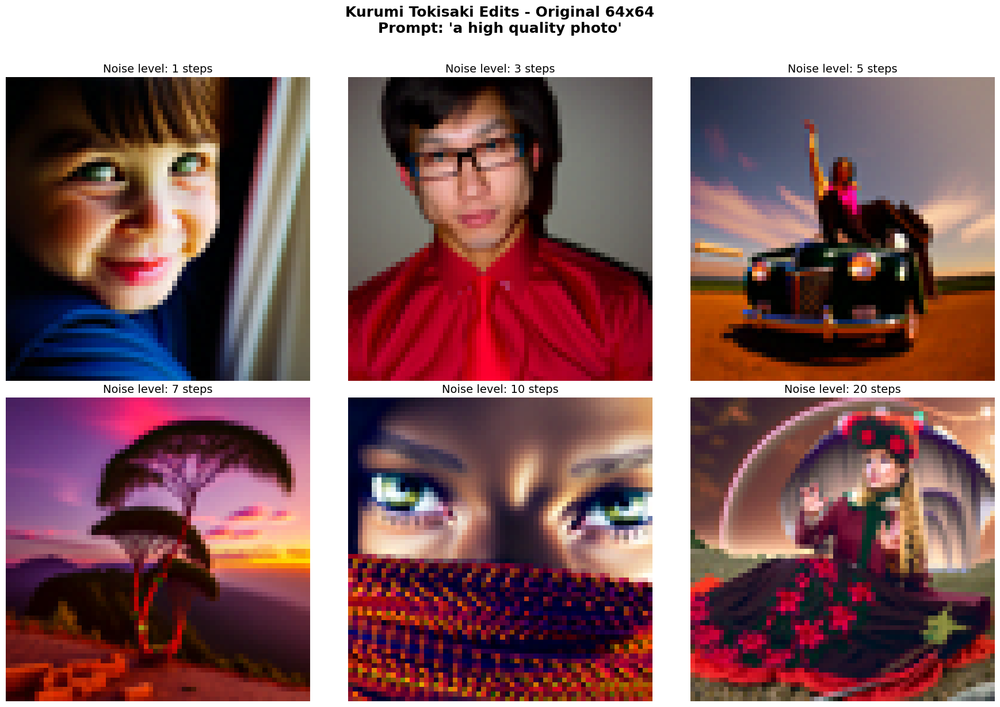
i_start = 1, 3, 5, 7, 10, 20
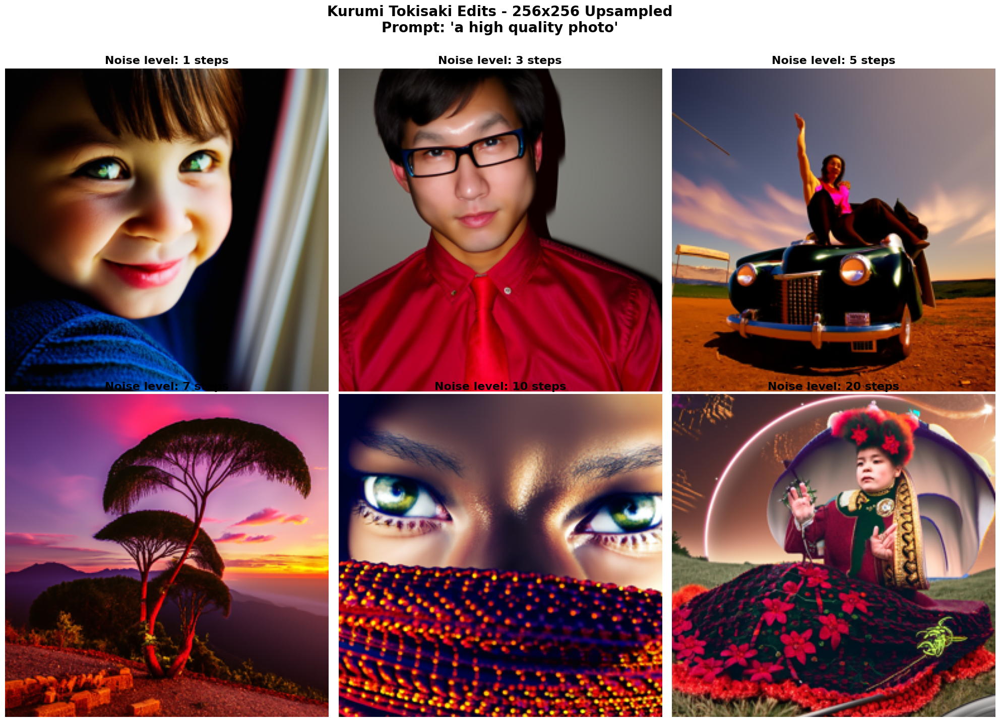
i_start = 1, 3, 5, 7, 10, 20
Destiny Traveler:
64x64
Custom Image 2
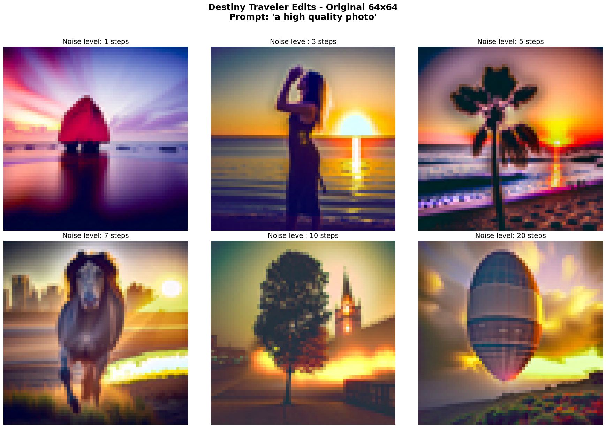
i_start = 1, 3, 5, 7, 10, 20
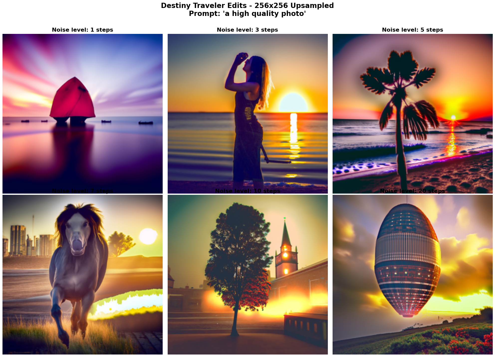
i_start = 1, 3, 5, 7, 10, 20
Part 1.7.1: Editing Hand-Drawn & Web Images
🎨 From Sketch to Reality
SDEdit works particularly well when starting with non-realistic images like sketches, paintings, or drawings. The algorithm projects these onto the natural image manifold, creating photorealistic versions!
Web Image Edit
Original Web Image
i_start = 1, 3, 5, 7, 10, 20
i_start = 1, 3, 5, 7, 10, 20
Hand-Drawn Image Edits
Drawing 1
Original Drawing
i_start = 1, 3, 5, 7, 10, 20
i_start = 1, 3, 5, 7, 10, 20
Drawing 2
Original Drawing
i_start = 1, 3, 5, 7, 10, 20
i_start = 1, 3, 5, 7, 10, 20
Amazing Result: Simple sketches transform into photorealistic images! Lower noise levels (i_start=1-3) create highly creative interpretations, while higher values (i_start=10-20) preserve more of the original drawing style.
Part 1.7.2: Inpainting with RePaint
🖌️ Filling in the Blanks
Inpainting allows us to fill masked regions with plausible content. The RePaint algorithm works by constraining the denoising process:
\[
\text{At each step:} \quad
x_t \leftarrow m \cdot x_t + (1 - m)\,\text{forward}(x_{\text{orig}}, t)
\]
\[
\text{where: }
m = \text{binary mask (1 in regions to fill, 0 elsewhere)}, \quad
x_{\text{orig}} = \text{original image}, \quad
\text{forward}(x_{\text{orig}}, t) = \text{add noise to original at timestep } t
\]
This forces unmasked pixels to match the original while allowing the model to "hallucinate" content in masked regions.
Campanile Inpainting
Original Image, Mask (red = fill), Inpainted Result
Custom Image Inpainting
Custom Image 1
Original Image, Mask (red = fill), Inpainted Result
Zoomed Comparison
Custom Image 2
Original Image, Mask (red = fill), Inpainted Result
Zoomed Comparison
Observation: The model generates plausible content that blends seamlessly with the surrounding context. The boundaries between original and inpainted regions are nearly imperceptible!
Part 1.7.3: Text-Conditional Image-to-Image Translation
📝 Semantic Control with Text
Instead of using the generic "a high quality photo" prompt, we can guide the SDEdit process with specific text descriptions. This adds semantic control, allowing us to transform images toward particular styles or subjects!
Campanile Transformations
Prompt: "a mosaic of a duck"
i_start = 1, 3, 5, 7, 10, 20
i_start = 1, 3, 5, 7, 10, 20
Prompt: "an oil painting of a botanical garden"
i_start = 1, 3, 5, 7, 10, 20
i_start = 1, 3, 5, 7, 10, 20
Prompt: "a lithograph of waterfalls"
i_start = 1, 3, 5, 7, 10, 20
i_start = 1, 3, 5, 7, 10, 20
Prompt: "a photo of a snowy mountain village"
i_start = 1, 3, 5, 7, 10, 20
i_start = 1, 3, 5, 7, 10, 20
Prompt: "an oil painting of people around a campfire"
i_start = 1, 3, 5, 7, 10, 20
i_start = 1, 3, 5, 7, 10, 20
Custom Image Transformations
I applied creative text prompts to two additional images. Here's a sample of results:
Custom Image 1: "snowy mountain village"
i_start = 1, 3, 5, 7, 10, 20
i_start = 1, 3, 5, 7, 10, 20
Custom Image 2: "campfire painting"
i_start = 1, 3, 5, 7, 10, 20
i_start = 1, 3, 5, 7, 10, 20
Fascinating Discovery: The same original image transforms in dramatically different ways depending on the text prompt! Low noise values (i_start=1-3) create bold artistic reinterpretations, while high values (i_start=10-20) apply subtle stylistic changes while preserving structure.
Part 1.8: Visual Anagrams
🔄 Optical Illusions with Diffusion
Visual Anagrams create images that appear as one thing right-side up and something completely different upside down! The algorithm averages noise estimates from two orientations:
By simultaneously satisfying constraints for both orientations, we create remarkable optical illusions!
Illusion 1: Old Man ↔ Campfire
Prompt 1 (right-up): "an oil painting of an old man" Prompt 2 (upside-down): "an oil painting of people around a campfire"
64x64 vs 256x256 "Old man <--> Campfire"
Illusion 2: Amalfi Coast ↔ Dress
Prompt 1 (right-up): "a photo of the amalfi coast" Prompt 2 (upside-down): "a photo of a dress"
64x64 vs 256x256 "Amalfi Coast <--> Dress"
Illusion 3: Skull ↔ Rabbit
Prompt 1 (right-up): "a lithograph of a skull" Prompt 2 (upside-down): "a lithograph of a rabbit"
64x64 vs 256x256 "Skull <--> Rabbit"
Mind-Blowing Result: These illusions work remarkably well! The model successfully creates images that look like completely different objects when flipped. Artistic styles (oil paintings, lithographs) tend to work better than photorealistic prompts.
Part 1.9: Hybrid Images (Factorized Diffusion)
👁️ Distance-Dependent Perception
Hybrid images exploit the fact that our visual system processes different spatial frequencies at different viewing distances. By combining low frequencies from one prompt with high frequencies from another:
Viewing Instructions: Look at the image up close to see high-frequency details, then physically step back from your screen or squint to see the low-frequency content emerge! The effect is more pronounced on the 256×256 versions.
Success: The hybrid images work wonderfully! The frequency decomposition creates a convincing distance-dependent illusion. This technique combines classical image processing (frequency filtering) with modern generative AI in a creative way.
-->
Part B: Training Your Own Diffusion Model
From Scratch: UNet, Flow Matching, and Beyond
🎯 Part B Overview: Building a Generative Model from Scratch
The Challenge
In Part A, we explored pre-trained diffusion models. Now, we build our own! We'll implement:
UNet Architecture: The backbone neural network
Flow Matching: A modern approach to diffusion
Time Conditioning: Teaching the model where it is in the denoising process
Class Conditioning: Controlling what gets generated
Goal: Generate realistic digit images from pure random noise!
Why Flow Matching?
Flow matching is a modern alternative to DDPM that's simpler to implement, faster to train, and produces excellent results. It frames generation as solving an ordinary differential equation (ODE) from noise to data.
Part 1.1: Implementing the UNet
📐 UNet Architecture
The UNet is a convolutional neural network with an encoder-decoder structure and skip connections. It's the workhorse of diffusion models!
encoder_features
->
torch.cat([decoder_features, encoder_features])
->
Further processing
Purpose: Preserves fine details from encoder
Implementation Complete! The UNet architecture provides a powerful feature extractor with multi-scale representations. Skip connections ensure fine details aren't lost during downsampling.
Part 1.2: Training a Simple Denoiser
🎯 One-Step Denoising Task
Before flow matching, let's train a simple denoiser:
Given: \( z = x + \sigma \epsilon \quad \text{where } \epsilon \sim \mathcal{N}(0, I), \; \sigma = 0.5 \)
Goal: \( D_\theta(z) \to x \)
Loss: \[ L = \mathbb{E}\big[ \| D_\theta(z) - x \|^2 \big] \]
This teaches the UNet to remove noise in a single forward pass.
Noising Process Visualization
First, let's see how images degrade with increasing noise levels σ:
MNIST Noising Process at Different Sigma Levels
Single MNNIST Digit (Label: 5) with Increasing Noise
Training Results
Training Loss Curves
One-step denoiser training converges smoothly
Denoising Performance
Comparing results after epochs 1 and 5:
Results After 5 Epochs (Learning basics)
Observation: The UNet successfully learns to denoise images at σ=0.5! After 5 epochs, it recovers clean digits from noisy inputs with high fidelity. This demonstrates the model's ability to learn the underlying data structure.
Part 1.2.2: Out-of-Distribution Testing
🧪 Testing Generalization
Our model was trained only on σ = 0.5. How does it perform on different noise levels it hasn't seen?
Performance Across Noise Levels
Same digit denoised at different σ values
Single Digit (Label: 7) denoised at different σ values
Quantitative performance: MSE vs noise level
Key Findings:
Best performance at σ = 0.5 (training noise level)
Graceful degradation for nearby noise levels (0.4-0.6)
Performance drops significantly for σ > 0.7
Model struggles with very low noise (σ < 0.2) - tries to "denoise" already clean images!
Insight: The model generalizes reasonably well to similar noise levels but struggles far from its training distribution. This motivates multi-scale training in full diffusion models!
Part 1.2.3: Denoising Pure Noise
🎨 Can We Generate from Pure Noise?
What if we train the model to denoise pure random noise (z ~ N(0, σ²I)) directly to clean images?
Training: \( z = \sigma \cdot \epsilon \quad (\text{pure noise}) \)
Target: \( x \; (\text{clean digit}) \)
Loss: \[ L = \mathbb{E}\big[ \| D_\theta(z) - x \|^2 \big] \]
Training and Results
Pure Noise Training loss curve
Epoch 1 Generations
Epoch 5 Generations
What Went Wrong?
20 different samples - all look the same!
🧠 Why Does This Fail?
The MSE Loss Problem:
With MSE loss:
\[ D_\theta^* = \arg\min \; \mathbb{E}\big[ \| D_\theta(z) - x \|^2 \big] \]
Optimal solution:
\[ D_\theta^*(z) = \mathbb{E}[x] = \text{mean of all training images} \]
Explanation:
The model minimizes expected squared distance to ALL training examples
Mathematically optimal: predict the centroid (average) of training data
Pure noise has no structure → model defaults to "safest" prediction
Result: Blurry "mean digit" that's an average of 0-9
All samples look identical regardless of input noise
This is NOT a bug - it's a fundamental limitation of one-step denoising with MSE loss!
Key Lesson: To generate diverse, realistic samples, we need:
✅ Iterative refinement (multiple denoising steps)
✅ Time conditioning (tell model where in process it is)
✅ Flow matching or DDPM (proper diffusion framework)
This motivates Part 2: Flow Matching!
Part 2: Training a Flow Matching Model
🌊 Flow Matching: A Modern Approach
Key Idea: Instead of one giant denoising step, learn to iteratively "flow" from noise to data.
Learn to predict the flow at any point \( z_t \) and time \( t \).
Why This Works:
Time conditioning: Model knows "where" it is (t=0.1 vs t=0.9)
Gradual refinement: Many small corrections → large transformation
Smooth trajectory: Linear path ensures tractable learning
ODE solving: At inference, integrate the learned flow field
Mathematical Intuition: We're learning a vector field that "pushes" noise toward the data distribution. By following this field (solving dz/dt = u_θ(z,t)), we transform noise into realistic images!
Part 2.1: Adding Time Conditioning to UNet
⏰ Why Time Conditioning?
The model needs to know "when" it is in the denoising process:
Purpose: Transform scalar time t into spatial modulation maps
Time Injection Strategy
Modulation Point 1 (7×7)
t → FCBlock → reshape to (batch, D, 7, 7)
->
unflatten_output = unflatten_output * t_modulation
Multiplicative conditioning at bottleneck
Modulation Point 2 (14×14)
t → FCBlock → reshape to (batch, D, 14, 14)
->
up1_output = up1_output * t_modulation
Multiplicative conditioning at mid-resolution
Result: The UNet now understands temporal context! It can adapt its predictions based on how much denoising has already occurred.
Part 2.2-2.3: Training & Sampling Time-Conditional UNet
Algorithm B.1: Training
For each training iteration:
1. Sample clean image x_1 from dataset
2. Sample random time t ~ Uniform[0,1]
3. Sample noise x_0 ~ N(0,I)
4. Interpolate: z_t = (1-t)x_0 + t·x_1
5. Compute true flow: flow_true = x_1 - x_0
6. Predict flow: flow_pred = u_θ(z_t, t)
7. Loss: MSE(flow_pred, flow_true)
8. Backprop and update
Algorithm B.2: Sampling (Euler Integration)
Initialize: z_0 ~ N(0,I)
dt = 1 / num_timesteps
For t = 0 to 1 (in steps of dt):
flow = u_θ(z_t, t)
z_{t+dt} = z_t + dt * flow
Return: z_1 (clean image!)
Key Insight: We're numerically solving the ODE dz/dt = u_θ(z,t) using Euler's method!
Training Results
Training loss curves (raw, smoothed, per-epoch)
Generated Samples: Progression Across Epochs
Epoch 1
Epoch 1: Basic shapes emerging
Epoch 5
Epoch 5: Clearer, more recognizable digits
Epoch 10
Epoch 10: High-quality, diverse samples
Side-by-Side Comparison
Progression: Epochs 1 → 5 → 10
Training Loss with Epoch Markers
Training Loss, Smoothed Loss
🎉 Success! Time-conditional flow matching generates diverse, realistic digits from pure noise! This is a massive improvement over the "mean digit" from Part 1.2.3. The model has learned meaningful trajectories from noise to data.
Part 2.4-2.6: Class-Conditional Generation + Classifier-Free Guidance
🎯 Adding Class Control
Time conditioning enables generation, but we can't control what gets generated. Let's add class conditioning so we can specify which digit (0-9) to generate!
Architecture Changes:
Input: Class label c ∈ {0,1,...,9}
Convert to one-hot vector: c → [0,0,1,0,...,0] (10-dimensional)
Add FCBlocks for class conditioning (parallel to time FCBlocks)
Is the exponential learning rate scheduler necessary? Let's find out!
Experimental Setup:
Approach
Learning Rate
Schedule
With Scheduler
1e-2 → 3.16e-3
Exponential decay
Without Scheduler
5e-3 (constant)
None
Hypothesis: A well-chosen constant LR (geometric mean of scheduled range) should work comparably.
Results
Training curves: With Scheduler (Final loss: 0.170318) vs Without (Final loss: 0.188228)
Without LR Scheduler (constant 5e-3)
Key Findings:
✅ Similar final loss - comparable performance
✅ Smoother training curve - no scheduler oscillations
✅ Comparable sample quality - both produce good digits
✅ Simpler implementation - one less hyperparameter
Conclusion: For this task, a well-chosen constant learning rate successfully replaces exponential scheduling while providing simpler, more stable training dynamics!
🔔 Part 3: Bells & Whistles
Going Beyond MNIST
Let's push our flow matching model to new domains and demonstrate its versatility!
Results: Significantly clearer digits with better diversity! Even without class labels, the improved architecture produces recognizable digits across 0-9.
Fashion-MNIST: 10 classes × 8 samples each (CFG=5.0)
Fashion-MNIST training curves
Achievement: Flow matching successfully generalizes to clothing! Clear distinctions between different fashion items, demonstrating the model's ability to learn beyond simple digits.
Flow matching isn't limited to MNIST! With appropriate modifications, it works for fashion items, natural objects, and RGB images.
The Bigger Picture
This project demonstrates the core principles behind modern generative AI:
🎨 Stable Diffusion uses similar diffusion + UNet + conditioning
🖼️ DALL-E employs comparable guidance techniques
🎬 Runway Gen-2 extends these ideas to video
🎵 MusicGen applies diffusion to audio
By implementing flow matching from scratch, we've built the foundation for understanding and creating the next generation of AI systems!
🌟 Project Complete! 🌟
From exploring pre-trained diffusion models to training our own flow matching networks, from simple digits to color images, we've mastered the art and science of modern generative AI.